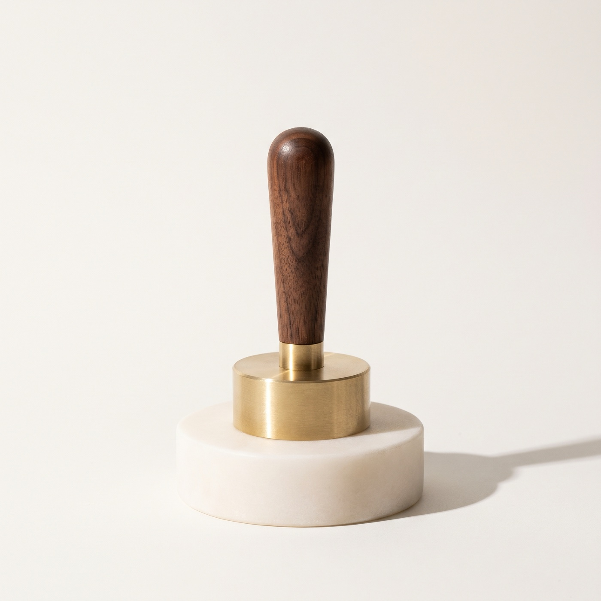

Flagship · Pre-launch

Lead-free brass · 2 in / 50.8 mm
2-Inch Lead-Free Cocktail Ice Stamp
A custom design in lead-free brass, cut with relief for a distinct impression on ice. Made for the final detail on your next cocktail. Material documentation is published before orders open.